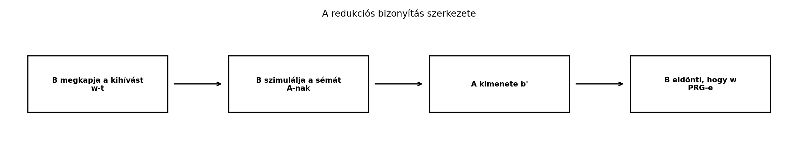

A fejezet előző részeiben definiáltuk a játékalapú biztonsági
célokat, például az EAV- és az IND-CPA-biztonságot. A definíció azonban
önmagában csak azt mondja meg, hogy mit várunk el; azt nem,
hogy hogyan bizonyítsuk egy konkrét konstrukcióról. A modern
kriptográfiában a bizonyítások szinte mindig redukciók:
megmutatjuk, hogy ha egy támadó hatékonyan fel tudja törni a sémát,
akkor abból egy másik támadót tudunk építeni, amely a mögöttes
primitívet töri fel. Ha pedig a primitívről feltesszük, hogy
biztonságos, akkor a séma is biztonságos. Ez a módszer adja a
bizonyítható biztonság (provable security) gerincét.
Ebben az alfejezetben két teljes redukciós bizonyítást tanulunk meg:
először egy biztonságos pszeudovéletlen generátorból (PRG) épített
folyamrejtjel EAV-biztonságát, majd egy PRF-ből épített véletlen
számlálós titkosítás IND-CPA-biztonságát. A második bizonyításban
használjuk a hibrid érvelést, és kiszámítjuk az
előnyveszteséget.
17.4.1 Motiváció: miért kell a
redukció?
Tegyük fel, hogy építünk egy titkosító sémát egy folyamrejtjelből: a
kulcsból PRG-vel kulcsfolyamot állítunk elő, és XOR-ozzuk az üzenettel.
Honnan tudjuk, hogy ez a séma titkos? Azt szeretnénk, hogy ne kelljen
minden új sémához új, bonyolult kriptanalízist végezni. Ehelyett a
biztonságot visszavezetjük egy már ismert,
feltételezett tulajdonságra: a PRG kimenete nem különböztethető meg a
valódi véletlentől. Ha a séma feltörhető lenne, akkor a PRG is
megkülönböztethető lenne – ez ellentmond a PRG biztonságának. Ez a
gondolatmenet a redukció.
A redukció szerkezete általánosan a következő:

A redukciós bizonyítás szerkezete - Ha A
feltöri a sémát, B feltöri a primitívet.
A redukció tehát egy „ha A, akkor B” típusú bizonyítás: ha van egy
támadó, amelynek előnye
a séma ellen, akkor konstruálunk egy
támadót, amelynek előnye
(vagy
egy része) a primitív ellen. Ha a primitívről tudjuk, hogy az előny
elhanyagolható minden hatékony támadó számára, akkor
is elhanyagolható.
17.4.2 A PRG formális
definíciója
Definíció. Egy
függvény pszeudovéletlen generátor (PRG), ha
,
és minden hatékony
megkülönböztetőre az előny
elhanyagolható
-ben.
A PRG tehát egy determinisztikus függvény, amely egy rövid, valódi
véletlen seedet egy hosszabb bitsorozatra terjeszt ki, és a kimenet
számításilag megkülönböztethetetlen a valódi véletlen azonos hosszúságú
bitsorozattól.
17.4.3 PRG-ből EAV-biztonságos
folyamrejtjel
Konstrukció. Legyen
PRG. Az
folyamrejtjel az alábbi:
Bizonyítási terv. Tegyük fel, hogy létezik
,
amely EAV-játékban sikeresen támadja a sémát. Konstruálunk egy
megkülönböztetőt a PRG ellen:
megkap egy
bitsorozatot, amely vagy PRG-kimenet, vagy valódi véletlen.
a
játékot szimulálja
számára úgy, hogy a kulcsfolyamot éppen
-vel
helyettesíti. Ha
PRG-kimenet, akkor a szimuláció pontosan a valódi séma; ha
valódi véletlen, akkor a rejtett szöveg független az üzenettől, így
nyerési esélye
.
A két eset valószínűségének különbsége éppen
előnye, ami
előnye is.
Bizonyítás. Legyen
egy EAV-támadó
ellen. Definiáljuk a
játékot a szokásos módon:
megad két üzenetet,
-t;
a kihívó választ egy
bitet, titkosítja
-t:
,
ahol
;
megkapja
-t,
és kimenete
.
A támadó akkor nyer, ha
.
Az EAV-előny:
Konstruáljuk
-t
a PRG ellen:
Algoritmus
:
megkapja
-t.
futtatja
-t.
Amikor
megadja
-et,
választ
-et,
kiszámítja
-t,
és
-t
odaadja
-nak.
kimenete
.
Ha
,
kimenete
;
különben kimenete
.
Elemezzük a
előnyét. Két eset van.
Ha
valamilyen
-re:
ekkor
pontosan a valódi
titkosítás szerint készült. Így
nézete megegyezik az EAV-játékbeli nézettel, tehát
nyerési valószínűsége ugyanaz. Ebből
Ha
valódi véletlen
:
ekkor
.
Mivel
egyenletes eloszlású és független
-től,
a
művelet miatt
is egyenletes eloszlású
-en,
és független
-től.
Ezért
semmilyen információt nem kap
-ről,
így
A PRG-előny definíciója szerint:
Mivel
biztonságos PRG,
elhanyagolható minden hatékony
-re,
tehát
is elhanyagolható minden hatékony
-ra.
Ezért
EAV-biztonságos. ∎
Megjegyzés. Ez a bizonyítás pontosan mutatja a
redukció szerkezetét:
a PRG-kihívásából kapott
-t
használja fel kulcsfolyamként, és a séma-támadót
-t
mint fekete dobozt futtatja. Nincs szükség arra, hogy
ismerje a seedet vagy a kulcsot; elég, ha a kapott értéket mint
kulcsfolyamot használja.
17.4.4 A PRF formális
definíciója
A második bizonyításhoz szükségünk van a pszeudovéletlen függvény
(PRF) fogalmára. A PRF egy kulcsos függvény, amelynek kimenete „véletlen
függvénynek tűnik” a támadó számára.
Definíció. Legyen
egy hatékonyan számolható, kulcsos függvény. Rögzített
esetén
.
Azt mondjuk, hogy
pszeudovéletlen függvény (PRF), ha minden hatékony
orákulumos támadóra az előny
elhanyagolható
-ben.
Itt
az összes
függvény halmaza, és
egyenletes eloszlással választódik belőle.
A PRF biztonsága tehát azt mondja, hogy a támadó, amely hozzáfér egy
orákulumhoz, nem tudja eldönteni, hogy a orákulum egy valódi, véletlen
kulcsú
,
vagy egy teljesen véletlen
függvény.
17.4.5 PRF-ből IND-CPA-biztonságos
titkosítás
Most megmutatjuk, hogyan lehet PRF-ből IND-CPA-biztonságos
szimmetrikus titkosítást építeni. A konstrukció az üzenet titkosításához
egy friss, véletlen
értéket használ, amelyet nyilvánosan elküldünk a rejtett szöveg
részeként.
Konstrukció
.
Legyen
PRF, ahol
,
és tegyük fel, hogy az üzenetek hossza
.
A séma:
:
egyenletes eloszlással.
:
választ
egyenletes eloszlással; kimenet
.
:
ha
,
akkor
.
Tétel. Ha
biztonságos PRF, akkor
IND-CPA-biztonságos.
Bizonyítási terv. A bizonyításhoz a hibrid
érvelés módszerét használjuk. Három játékot definiálunk:
H0: a valódi IND-CPA játék
ellen.
H1: mint H0, de az
függvényt egy valódi véletlen
függvényre cseréljük. A véletlen függvény konzisztens: ha ugyanaz a
érték többször szerepel, ugyanazt az
-t
adja.
H2: mint H1, de a titkosításban az
helyett egyszerűen
-et
számolunk, ahol
minden titkosításnál frissen, egyenletesen választott. Ez lényegében az
egyszer használatos kulcs (OTP).
A két hibrid lépésben becsüljük a különbségeket: H0 és H1 között a
PRF-biztonság ad korlátot; H1 és H2 között annak a valószínűsége ad
korlátot, hogy a támadó által látott
értékek között ütközés van. Végül H2-ben a támadó nyerési valószínűsége
pontosan
,
mert a kihívás rejtjele teljesen független
-től.
Bizonyítás. Legyen
egy IND-CPA támadó, amely legfeljebb
titkosítási lekérdezést tesz (beleértve a kihívást is). Definiáljuk a
három hibridet.
H0: az eredeti
játék.
H1: a játék megegyezik H0-zal, de az
helyett egy
véletlen függvényt használunk. Amikor
titkosítási lekérdezést tesz
-re,
a kihívó választ
-t,
kiszámítja
-et,
és visszaadja
-t.
Ha ugyanaz az
ismét előfordul, a korábban megjegyzett
értéket használja.
H2: a játék megegyezik H1-gyel, de minden
titkosításnál, ahelyett hogy
-t
használnánk, egy friss
véletlen értéket választunk, és
-et
adunk. Az
ettől függetlenül egyenletes marad.
Először megbecsüljük a H0 és H1 közötti különbséget. Konstruálunk egy
PRF-megkülönböztetőt:
Algoritmus
:
hozzáfér egy orákulumhoz
,
amely vagy
valamilyen
-re,
vagy véletlen
.
futtatja
-t.
Amikor
titkosítási lekérdezést tesz
-re,
választ
-t,
lekérdezi
-t,
és visszaadja
-et.
A kihívás fázisban
megadja
-et.
választ
-et,
-t,
-t,
és visszaadja
-t.
kimenete
.
Ha
,
kimenete
;
különben
.
Ha
a PRF
,
akkor a szimuláció pontosan a H0 játék; ha
a véletlen függvény, akkor a H1 játék. Ezért
Tehát
Ez a redukciós lépés: a PRF biztonsága korlátozza a
H0 és H1 közötti eltérést.
Másodszor megbecsüljük a H1 és H2 közötti különbséget. H1-ben a
titkosítás során
,
ahol
egy véletlen függvény. Ha az
értékek mind különbözőek, akkor az
értékek független, egyenletes eloszlású
-bites
értékek, mert
minden új bemenetre független véletlen értéket ad. Ekkor a
éppen olyan eloszlású, mintha minden titkosításnál friss
-t
választanánk: mindkét esetben egyenletes, független
-bites
maszkot XOR-olunk az üzenettel. A különbség csak akkor lép fel, ha két
titkosításban ugyanaz az
fordul elő; ekkor H1-ben ugyanaz a
maszk ismétlődik, míg H2-ben a friss
független marad. Ez az ütközési esemény bekövetkezhet, de valószínűsége
kicsi.
Legyen
az az esemény, hogy a
által látott
értékek között van két azonos. A
legfeljebb
titkosítási lekérdezést tesz, tehát
darab
értéket lát. Minden
egyenletes
-ből,
egymástól függetlenül (feltéve, hogy a kihívó frissen választja, még ha
a séma determinisztikus is lenne, itt a valószínűségi modellben a
véletlent a kihívó húzza). A születésnapi korlát szerint
Ha
nem következik be, akkor a H1 és H2 játékok pontosan megegyeznek: minden
titkosításnál a maszk egyenletes és független, H1-ben
formájában, H2-ben
formájában. Ezért a két játék kimenete csak akkor különbözhet, ha
bekövetkezik, tehát
Harmadszor, H2-ben mi a támadó nyerési valószínűsége? H2-ben a
kihívás rejtjele
,
ahol
egyenletes és független minden korábbi értéktől. Mivel
egyenletes, a
is egyenletes
-en,
függetlenül
értékétől. A
szintén független. Így a teljes
eloszlása független
-től,
tehát
semmilyen információt nem kap
-ről,
és
Statikus változat (mint a PDF-ben)
A PRF
IND-CPA bizonyítás hibridjei: H0 → H1 ára legfeljebb
,
H1 → H2 ára legfeljebb
(r-ütközés), H2-ben a nyerési esély 1/2.
Most már össze tudjuk rakni. Az IND-CPA-előny definíciója szerint
Mivel
,
írhatjuk:
A háromszög-egyenlőtlenséggel:
Behelyettesítve az előbbi becsléseket:
Mivel
biztonságos PRF, a jobb oldal első tagja elhanyagolható. A második tag
is elhanyagolható, mert
legfeljebb polinomiális
-ben,
míg
exponenciálisan nagy
-ben
(és
tipikusan
-nel
arányos, például
vagy
).
Így az egész előny elhanyagolható, tehát
IND-CPA-biztonságos. ∎
Megjegyzés a hibrid érvelésről. A hibrid érvelés
általános mintája:
Definiálunk egy olyan játékot, amelyben a konstrukció egy
primitívjét fokozatosan lebontjuk, és a primitívet egy idealizált,
véletlen objektummal helyettesítjük.
Az első lépésben a PRF-biztonság redukciója adja, hogy az eredeti és
az első hibrid megkülönböztethetetlen.
A második lépésben azt mutatjuk meg, hogy az első és a második
hibrid csak akkor különbözik, ha egy ritka esemény (itt az
-ütközés)
bekövetkezik.
Az utolsó hibridben a támadónak semmilyen előnye nincs, mert a
rejtett szöveg teljesen független a kihívás bittől.
17.4.6 A CTR-mód biztonsági
bizonyítása mint ugyanez a minta
A gyakorlatban az előbbi
séma nagyon hasonlít a CTR (számláló) üzemmódhoz. A CTR-módban a
blokkrejtjel, mint PRP, egy számlálót titkosít, és a kimenetet XOR-olja
az üzenettel. A CTR-mód biztonsági bizonyítása ugyanezt a hibrid
érvelést követi, a következő módosításokkal:
A blokkrejtjel (pl. AES) mint PRP megkülönböztethetetlensége a
véletlen permutációtól: ezt a lépést a PRF, PRP,
switching-lemma és Luby–Rackoff alfejezetben tanuljuk.
A véletlen permutáció és a véletlen függvény közötti különbség
(switching lemma) szintén elhanyagolható, ha a lekérdezések száma jóval
kisebb, mint
,
ahol
a blokkhossz.
Végül a véletlen kezdőszámlálóból induló számlálótartományok
átfedésének valószínűsége jelenik meg. Ez a titkosított blokkok összes
számától
()
függ, nem az üzenetek számától: a switching-lemma és az átfedés együtt
kb.
nagyságrendű tagot ad (a pontos korlát a Konkrét
biztonság és üzemmódok biztonsági korlátai alfejezetben van). A
alak csak egyblokkos üzenetekre igaz.
Így a CTR-mód IND-CPA-biztonsága pontosan a PRF-ből IND-CPA
bizonyítás mintáját követi, kiegészítve a PRP/PRF átmenettel. Ezt a
konkrét biztonsági korlátokat tárgyaló Konkrét
biztonság és üzemmódok biztonsági korlátai alfejezetben
részletezzük. A lényeg itt az, hogy a redukciós szerkezet újra és újra
visszatér: a folyamrejtjel, a CTR, később a KEM/DEM mind ugyanazt a
mintát használja.
A PRG-kulcsot nem valódi véletlenből generálják. Ha
a PRG seedje nem egyenletes eloszlású, a PRG-kimenet sem lesz
megkülönböztethetetlen a véletlentől. A bizonyítás feltételezi, hogy
egyenletes. A gyakorlatban ezért használjunk secrets vagy
os.urandom modult, nem a random modult.
A PRF-alapú titkosításban az
értéket konstansra cserélik. Ha minden titkosítás ugyanazt az
-t
használja, akkor a
maszk is állandó, így a séma folyamrejtjellé fajul, és ismételt
titkosítás esetén
támadás lehetséges. Ez az ütközési tag lényege: a bizonyításban az
-ütközés
elkerülése garantálja a független maszkokat.
Elhanyagolják az ütközési tagot. Sokan azt hiszik,
hogy a PRF-ből IND-CPA bizonyítás azonnal ugyanolyan biztonságot ad,
mint az OTP. Valójában az ütközési valószínűség gyenge pont: ha
túl nagy
-hez
képest, a születésnapi hatás miatt romlik a biztonság. A gyakorlatban
ezért korlátozzák az egy kulccsal titkosított üzenetek számát (lásd a Nonce-visszaélés-ellenállás és kulcshasználati
korlátok alfejezetet).
17.4.8 Önellenőrzés
Igaz-e, hogy a PRG-ből épített folyamrejtjel bizonyítása során a
redukció előnyvesztesége nulla? Miért?
Mi a különbség a H1 és H2 hibridek között a PRF-ből IND-CPA
bizonyításban?
Miért jelenik meg a
tag a biztonsági korlátban?
Mit jelent az, hogy
szimulálja a játékot
számára?
Ha egy támadó képes megkülönböztetni a PRG-kimenetet a véletlentől,
fel tudjuk-e ezt használni a folyamrejtjel feltörésére? Hogyan?
A válaszok a ### Megoldások elején találhatók.
17.4.9 Feladatok
1. feladat (A). Fogalmazd meg formálisan az
EAV-biztonság definícióját egy
titkosító sémára.
2. feladat (A). Legyen
egy 4 bites seed, és
(12 bit). Ez a
biztonságos PRG? Indokold.
3. feladat (B). A PRF-ből IND-CPA séma
bizonyításában miért szükséges, hogy
minden titkosításnál friss legyen? Adj példát arra, mi romlik el, ha
ugyanazt az
-t
használjuk két különböző üzenethez.
4. feladat (B). Számítsd ki az ütközési valószínűség
felső korlátját, ha
bit és
lekérdezés van. Milyen következtetést vonhatsz le?
5. feladat (C). Bizonyítsd be, hogy ha egy PRG nem
biztonságos, akkor az abból épített folyamrejtjel sem lehet
EAV-biztonságos.
6. feladat (D). Tegyük fel, hogy valaki a
sémát úgy implementálja, hogy az
értékét nem véletlenül, hanem egy globális, növekvő számlálóból veszi,
amely 0-tól indul. Az ellenfél két rejtett szöveget lát, és tudja, hogy
a számláló 0 és 1 volt. Elemezd, hogy a megjósolható számláló rontja-e a
biztonságot, és mi az igazi veszély ilyen állapotfüggő sémánál.
17.4.10 Megoldások
Önellenőrzés – válaszok
Igaz, nulla a veszteség. A bizonyításban
,
tehát az előny pontosan átmegy, nem vesztünk semmit. Ez azért van, mert
a szimuláció tökéletes: a
által adott nézet pontosan megegyezik a valódi játékéval, ha
PRG-kimenet.
H1-ben egy valódi véletlen függvény
konzisztensen viselkedik: ha ugyanaz az
megismétlődik, akkor ugyanazt az
maszkot használjuk. H2-ben minden titkosításnál friss,
független véletlen
maszkot használunk, függetlenül attól, hogy
ismétlődik-e. A kettő közötti különbség az
-ütközés
valószínűségével korlátozható.
A
tag az ütközési valószínűség felső korlátja: annak valószínűsége, hogy
darab,
-ből
egyenletesen választott
között van két azonos. Ez a születésnapi paradoxonból adódik, és a H1–H2
különbséget kontrollálja.
úgy futtatja
-t,
mintha az a valódi sémával kommunikálna, de a kulcs helyett a saját
primitív kihívásából kapott értéket használja. Ha a kihívás valódi
primitív, a szimuláció tökéletes; ha véletlen, a nézet független az
üzenettől.
Igen. Ha van
,
amely megkülönbözteti
-t
a véletlentől, az EAV-támadó
-t
és egy egyenletesen választott
-et
ad meg. A kapott
-re
,
ha
,
különben
.
Ha
,
akkor
;
ha
,
akkor
egyenletes eloszlású, tehát
úgy viselkedik rajta, mint a véletlen szón. Az EAV-előny így
(részletes levezetés: az 5. feladat megoldása).
1. feladat megoldása. Az EAV-biztonság a Szemantikai biztonság és IND-CPA alfejezetben
definiált egyetlen üzenetes játék. Formálisan: minden hatékony
támadóra a
elhanyagolható. A játék:
ad
-et;
a kihívó
,
;
kap
-t,
kimenete
;
nyer, ha
.
2. feladat megoldása. Ez a
nem biztonságos PRG. Ha a támadó megkap egy 12 bites
-t,
ellenőrzi, hogy
felírható-e
alakban valamilyen 4 bites
-re.
Ha igen, 1-et ad ki; különben 0-t. A PRG-kimenetre mindig 1-et ad, míg
egy véletlen 12 bites szóra annak valószínűsége, hogy ilyen alakú,
legfeljebb
,
mert csak 16 ilyen szó van. Az előny tehát
,
ami el nem hanyagolható.
3. feladat megoldása. Ha ugyanazt az
-t
használjuk két üzenethez,
és
esetén, akkor
és
.
A támadó kiszámítja a második komponensek XOR-ját:
.
Ezután, ha ismeri az egyik nyílt szöveget, megkapja a másikat. Ez
pontosan az OTP-kulcsújrahasználat támadása, és megegyezik a
folyamrejtjel nonce-újrahasználatánál látott hibával.
4. feladat megoldása. A korlát:
.
Itt
,
,
tehát
Ez elhanyagolható. A következtetés: az ütközési tag akkor válik
jelentőssé, ha
megközelíti
-et,
mert akkor
.
Ez magyarázza a „születésnapi korlát” megjelenését. Ugyanígy
esetén a korlát
környékén éri el a
értéket, tehát a biztonság csak
lekérdezésig garantált,
lekérdezésnél már nem.
5. feladat megoldása. Tegyük fel, hogy
nem biztonságos PRG, azaz van egy hatékony
megkülönböztető, amelyre
valamilyen nem elhanyagolható
-ra.
Konstruálunk egy
EAV-támadót
ellen:
megadja
-t
és egy egyenletesen választott
-t.
A kapott
-re
,
ha
,
különben
.
Ha
,
;
ha
,
,
ami
egyenletessége miatt egyenletes eloszlású. Így
tehát az EAV-előny
(ha
előjele fordított,
értelmét cseréljük). Ez ellentmond az EAV-biztonságnak, ezért a séma nem
EAV-biztonságos.
6. feladat megoldása. A két rejtett szöveg
és
.
Mivel a PRF két különböző bemeneten vett értéke a támadó számára
független véletlennek tűnik, a két maszk független, ezért a támadó sem
-ről,
sem
-ről
nem tud meg semmit. A bizonyítás H1–H2 lépése itt ütközési tag nélkül
megy át, mert az
-ek
garantáltan különbözők (állapotfüggő séma). A számláló megjósolhatósága
tehát nem hiba (ellentétben a CBC-IV-vel). A valódi veszély a számláló
ismétlődése: ha egy újraindítás vagy két példány ugyanazzal a kulccsal
ismét 0-tól számol, akkor
ismétlődik, és
(lásd a 3. feladatot). Ezért kell a számlálót tartósan tárolni, vagy
kulcsonként egyedi nonce-ot használni.
17.4.11 Rövid összefoglaló
A redukciós bizonyítás azt mutatja meg, hogy ha egy támadó feltör egy
sémát, akkor egy másik támadó feltöri az alap primitívet. Itt két teljes
példát láttunk. A PRG-ből épített folyamrejtjel esetén a redukció
pontosan nulla előnyveszteséggel működik: a séma EAV-előnye megegyezik a
PRG-megkülönböztető előnyével. A PRF-ből épített véletlen számlálós
titkosítás IND-CPA-bizonyítása hibrid érvelést használ: három játékot
definiál, és megmutatja, hogy az első két játék különbségét a
PRF-biztonság, a második és harmadik különbségét pedig az
-ütközés
valószínűsége korlátozza. A harmadik játékban a támadó nyerési esélye
,
így az IND-CPA-előnyre
A PRG-ből folyamrejtjel és PRF-ből IND-CPA redukciós bizonyítások a
modern kriptográfia standard, stabil eredményei, amelyek Katz–Lindell,
Boneh–Shoup és más bevezető egyetemi jegyzetekben is megtalálhatók. A
hibrid érvelés és a születésnapi korlát klasszikus eszközök. Az
alfejezetben nem szerepelnek konkrét szabványszámok vagy támadási
költségek; a paraméterek illusztratívak. A gépi ellenőrzött bizonyítások
(EasyCrypt) csak említés szintjén jelennek meg; azok tárgyalása túlmutat
e könyv keretein.